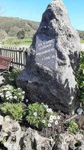

La Vega-Acéu
tipo: Senderismo
transporte: A pie
duracion: 1.5 horas
agencia: Sin agencia
descripcion: Ruta que va desde La Vega a Acéu
publico: Apta para todos
inicio: Plaza de Vega
direccion: Plaza de Casimiro Vega, 44, 33518 La Vega, Asturias
coordenadas
longitud: -5.5575
latitud: 43.41056
altitud: 292
referencias
https://es.wikipedia.org/wiki/Vega_(Sariego)
https://paisaje.asturias.me/comarca-de-la-sidra/c/0/i/77670629/pozu-salau-el
https://www.lne.es/centro/2008/10/05/carcabada-pueblo-ejemplar-21634972.html
recomendacion: 8
hitos
Fuente Pozu Salau
descripcion: Fuente cuyo nivel del agua sube y baja al ritmo del Mar Cantábrico
coordenadas
longitud: -5.545008
latitud: 43.410651
altitud: 278
distancia: 1.1 Km
imagenes
Estatuas de madera
descripcion: Figuras de personas de madera
coordenadas
longitud: -5.541796
latitud: 43.411112
altitud: 269
distancia: 0.3 Km
imagenes
Premio al pueblo ejemplar
descripcion: Premio al pueblo ejemplar del concejo, dado a Carcabada en el 2008
coordenadas
longitud: -5.539354
latitud: 43.40946
altitud: 284
distancia: 0.3 Km
imagenes
Iglesia de San Román
descripcion: Templo católico de estilo románico
coordenadas
longitud: -5.516392
latitud: 43.408092
altitud: 304
distancia: 2.6 Km
imagenes
Acéu
descripcion: Fin de la ruta
coordenadas
longitud: -5.514832
latitud: 43.406689
altitud: 327
distancia: 0.6 Km